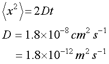
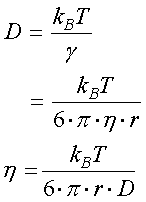

次に，細胞膜上での脂質分子の拡散定数を検討しましょう．
以下の議論は，
生体膜の動的構造（大西俊一，東京大学出版）
を参考にしました．
さて，細胞では細胞質（細胞内部）も重要ですが，細胞膜も非常に重要な役割を果たしています．
この膜は，脂質二重層でできあがっていて，リン脂質でできあがっていることはご存じですね？
この膜は，流動性のある膜で，その中に膜タンパクがある程度自由に移動できる，
流動モザイクモデル
というモデルでできていると考えられています．
実際に，この脂質二重膜におけるリン脂質の拡散定数を見積もった実験結果が報告されていて，

と見積もられました．
この本では，単位を，
cm2/s
で表記していましたが，ＳＩ系に直した単位にしています．
では，長さ５ミクロンの細胞の場合，端から端までに物質が移動するには，
７ｓ
かかることになります．
では，この脂質二重膜，どのくらいの粘度かを計算してみましょう．

リン脂質の半径を，ｒ＝0.46 nm，とすると，
η＝0.27
となります．
水が，0.001，なのでかなり高いですね．
この値，我々の身近なものでは，
ひまし油：0.7 （理科年表より）
なので，油程度，となります．まあリン脂質も油なので，納得，という感じでしょうか．